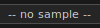
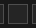
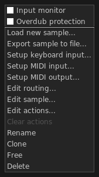
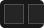
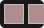
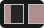
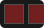
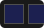

A Sample channel contains one sample, which you can play manually or controlled by the main sequencer. Manually, the sample will play right away; sequenced, it will start on the sequencer first beat and will loop back on the last one.
By clicking on the main button  you will be able to load a new audio file as well as doing further operations. You can add a new channel by clicking on the button on top of each column on the main window, or by drag-and-dropping a file over the column itself.
A Sample channel is made of several components. From left to right:
Play button — starts and stops the channel (if loaded with a sample);
Arm button — arms the channel for recording;
 Status box — reports the playback position of the running sample;
Main button — shows the sample name and allows many operations on it. More information in the paragraphs below;
 Read actions button — if enabled, actions recorded for this channel will be reproduced. The button is grayed out if the channel has no actions;
Read actions button — if enabled, actions recorded for this channel will be reproduced. The button is grayed out if the channel has no actions;
Mute button — mutes the sample.
Solo button — solo mode. Only this channel will be audible;
 FX button — display the plug-ins window;
FX button — display the plug-ins window;
Volume dial — controls the channel volume;
Mode box — sets the channel play mode. More information in the paragraphs below.
Clicking on a Sample channel main button reveals a pop-up menu with several options available:

Input monitor — when enabled, it allows you to monitor (i.e. listen to) the audio input to an armed channel. This option can be set to on or off by default in the configuration window, "Behaviors" tab;
Overdub protection — if enabled, the arm button is disabled when the channel is not empty. This is useful to prevent unwanted overwrites of your audio recordings while live recording;
Load new sample — replaces the current sample with a new one. Volume, actions, mode will be preserved;
Export sample to file — writes the loaded sample to disk. This option is useful to export a single take without saving the entire project (more information in section Save, load, export);
Set keyboard input — binds keyboard buttons to this channel;
Setup MIDI input — binds MIDI events to this channel, see MIDI input management;
Setup MIDI output — enables MIDI output from this channel, see MIDI output management;
Edit routing — allows to tweak some input and output properties such as panning, volume, ...;
Edit sample — opens the Sample Editor;
Edit actions — opens the Action Editor;
Clear actions — deletes recorded actions from the channel: key press/key release, volume or everything. The option is grayed out if there are no actions to delete;
Rename — changes the channel name;
Clone — adds a new channel by making a full copy of the current one;
Free — discharges the sample and the recorded actions, if any. Volume and mode will be preserved.
Delete — removes the channel from the column. Actions and samples will be deleted as well.
The status box gives you information about the sample:
 Off — the channel is stopped;
 Wait/ending (blinking) — the channel is waiting for the first beat or is about to stop;
 Play — the channel is active and playing;
 Action recording on — the channel is ready to record actions;
 Audio recording on — the channel is recording something from the sound card.
Play modes define the behavior of a sample channel and are divided into two families: loop and one shot.
Main features of loop modes:
work only when the sequencer is running;
constrained to the sequencer boundaries;
you can't record keypress/keyrelease actions on them (but volume actions are allowed).
Main features of one shot modes:
independent from the sequencer;
you can record actions on them.
| type | icon | name | effect |
|---|---|---|---|
| loop | loop basic | The sample starts at beat 1 and will play continuously until its key is pressed | |
| loop once | The sample starts at beat 1 and will play until finished. Then, at the next first beat it starts again | ||
| loop once bar | Similar to the previous mode, but the sample starts again also on the next first bar | ||
| loop repeat | The sample starts at beat 1 and will play continuously, rewinding itself at every bar | ||
| one shot | one shot basic | The sample starts on key press, stops and rewinds on a second keypress | |
 | one shot basic pause | Like the previous mode, but the sample just pauses on a second keypress. Pressing the key again resumes play | |
 | one shot press | The sample plays as long as its key is pressed | |
| one shot retrig | The sample plays until the end; pressing its key rewinds it | ||
| one shot endless | The sample plays in loop forever; pressing its key stops it |
Sample channels are playable by clicking on the channel play button . or by pressing the corresponding keyboard/MIDI button if bound. The following table shows the behavior of sample channels in loop mode:
| mode | event | alt. event | result |
|---|---|---|---|
| loop | |||
| (key) | click on play button | wait, then start or stop on next first beat | |
| shift + (key) | shift + click on play button | immediate stop. Also rewinds samples in "one shot basic pause" mode | |
| control + (key) | click on mute button | mute |
The following table shows the behavior of channels in one shot mode:
| mode | event | alt. event 1 | alt. event 2 | result |
|---|---|---|---|---|
| one shot | ||||
| (key) | click on play button | - | start | |
| shift + (key) | shift + click on play button | click on read actions button | immediate stop if channel has no actions, else start or stop reading actions | |
| control + (key) | click on mute button | - | mute |